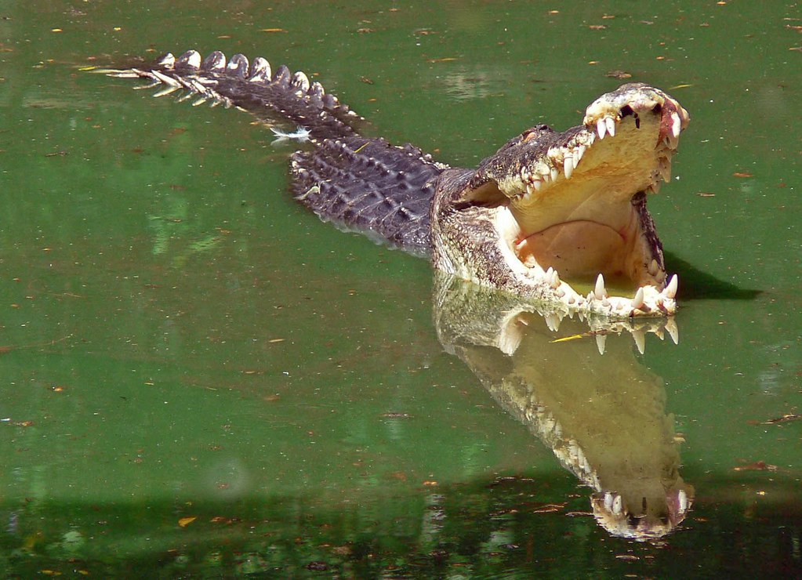

Top 10 Deadliest Animals
1,000 deaths per year
Another deadly water-dweller you would want to avoid is the saltwater crocodile. Crocodiles as a group are quite deadly, killing around a 1,000 people a year, but they do not generally set out to hunt humans and kills are opportunistic.
The saltwater crocodile however is one of the most likely to see humans as prey. It is also fierce, fast, and intimidating, being the largest living reptile and crocodilian known. Males can grow to a length of 6 metres and weigh 1,300 kg.
When pursuing prey through the water they can also reach speeds of 18mph. All this together means that if a saltwater crocodile has chosen you as his prey, survival is unlikely.
